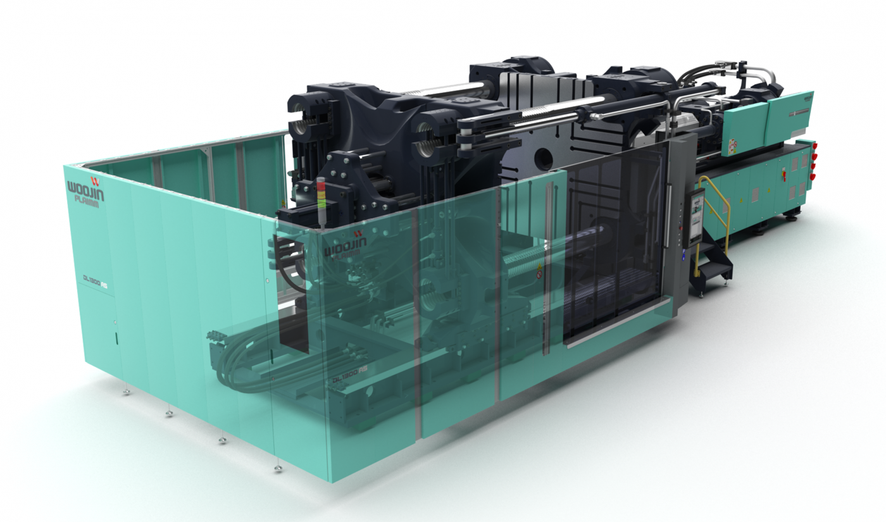

Clamping Unit
01. Konstrukcja płyt
- Analiza metodą elementów skończonych (FEA) zwiększa dopuszczalną wagę montowanej formy dzięki minimalizacji ugięcia płyty, uzyskanej dzięki zoptymalizowanej konstrukcji (wer. 2).
02. Maksymalne wykorzystanie przestrzeni
- Maksymalne wykorzystanie przestrzeni dzięki łatwemu montażowi dużych form w pomieszczeniach o niskich sufitach i w ograniczonej przestrzeni (wer. 2).
03. Zwiększona trwałość
- Zastosowanie śrub w kształcie litery U oraz kolumn (tie bars) zwiększa trwałość dzięki efektowi rozpraszania naprężeń.
04. Skrócenie czasu cyklu
- Zsynchronizowany system sterowania ryglowaniem półnakrętkowym (half-nut) skraca czas cyklu.
05. Precyzja pozycjonowania
- Szybkoreagujący zawór proporcjonalny zamontowany na module przesuwu zwiększa precyzję pozycjonowania.
06. Niezawodne działanie przełączania
- Elastyczna konfiguracja cylindrów otwierania/zamykania (lewy/prawy) zapewnia stabilną pracę przy otwieraniu i zamykaniu.